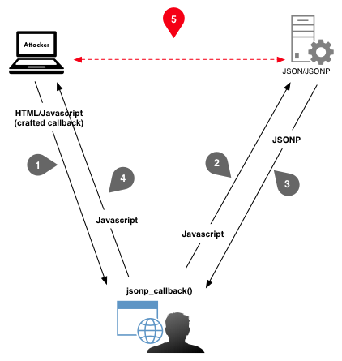

JSONP vs JSON
I had an opportunity to experiment exploiting JSONP in real life. Honestly, I had never heard of it before.
JSON is a well known method to serialize data, but what is JSONP? Actually, it is nothing new, but rather a specific use of JSON.
In AJAX websites, XMLHttpRequest is used in client-side Javascript code to forge HTTP requests, which fetch data from some JSON service.
For example, following a GUI event (onclick, mouseover, …), such XHR code may be executed:
var xhr = new XMLHttpRequest();
xhr.onreadystatechange = function() {
if (xhr.readyState == 4) {
alert(xhr.responseText);
}
}
xhr.open('GET', 'http://example.com/search.php', true);
xhr.send(null);
The requested server may answer with XML data, or JSON like here:
{"id": 1, "name": "Foo", "price": 123}
However, XHR request is limited to the current domain, due to the SOP (Same Origin Policy) that is enforced on modern browsers. What if it is necessary to retrieve data from another domain?
Here comes JSONP as one of the possible solutions.
hello({"id": 1, "name": "Foo", "price": 123});
As you can see, data is padded (P in JSONP) inside a callback function, which we are going to study.
How JSONP works
The trick consists in requesting the JSONP service inside <script> tags, which, by design, are out of the SOP scope.
The call to the JSONP service just defines a callback function name as a parameter. Note that the callback function is included in the same page as the call.
Then, the JSONP service answers with data encapsulated inside the callback function name. That way, the browser will execute the callback function and pass data as its parameters.
It is confusing to explain and I may have lost you in trying to explain. Hopefully this diagram may clarify this stuff:
-

XHR vs JSONP
Domain1 XHR requests to domain2 are not allowed. Therefore, the callback trick ensures that data is fetched from domain2 while the corresponding code is processed in the context of domain1.
All this way around has a unique goal: have the code to be executed in the same context as the originating page. In other words: bypassing the SOP.
Security Concerns
This is not without any security caveats. Someone outlined some very valid points on Stackexchange, and it is well written, so I will just copy and paste what he said about JSONP security:
- Requires excessive trust. Suppose you have a page hosted on
a.com and it uses JSONP to access services provided by b.org. This involves placing 100% trust in b.org. If b.org is malicious or buggy, it can subvert the security of the embedding page and all of the a.com origin. This kind of excess trust is dangerous from a security perspective: it makes your application fragile.
To put it another way: JSONP is basically a self-inflicted XSS. Yes, OK, I know it’s a feature, not a bug, but still…
- CSRF vulnerabilities. You have to remember to defend against CSRF vulnerabilities, and with JSONP, that gets a bit tricky. Standard advice is to ensure that only POST requests can trigger a side-effect, and to include a CSRF token in all POST requests; but JSONP involves sending a GET request to trigger a side-effect, which ain’t exactly the cleanest solution you’ve ever seen. So this means that the host that provides JSONP service needs to remember to check CSRF tokens even on GET requests. Also, it requires a bit of a tricky protocol for the embedding page (
a.com) to obtain the proper CSRF token from the JSONP service (b.org). It gets messy.
- Causes mixed-content warnings. Suppose we have a page hosted on
https://a.com and it accesses a JSONP service on http://b.org. Then this will inevitably trigger a scary-looking mixed-content warning (since JSONP involving loading a script from http://b.org).
- User authentication gets ugly. If
b.org wants to authenticate the user, that gets tricky to do when using JSONP. The embedding page (a.com) needs to first somehow give the user an opportunity to log into b.org in advance, before accessing b.org‘s JSONP service. Both sites need to coordinate.
I would just add that, though it is not perfect, it is at least possible to mitigate CSRF on GET requests by checking the HTTP referer (when possible).
Is this complete? Let me know if you have other suggestions.
Simple Exploitation
During a pentest, I had to audit a rather complex application which happened to do some requests to another server in JSONP.
The few following snippets are a simplified representation of the case.
Exploitation code right below may be uploaded to a server controlled by the attacker (who may need some social engineering to get the visitor to reach his page).
<html>
<head>
<script>
hello = function(data) {
alert("hello " + data.name);
}
</script>
</head>
<body>
<h1>JSONP Call</h1>
<script src="http://domain.com/jsonp.php?jsonp_callback=hello"></script>
</body>
</html>
So in red, the call to JSONP with the callback function name indicated. In green, the callback function itself. It is just displaying an alert box containing the fetched JSONP data, but of course it could have malicious features (like cookie stealing).
The JSONP service can be simulated by the following code, hosted on another server (e.g. the attack target):
<?php
header('Cache-Control: no-cache, must-revalidate');
header('Expires: Mon, 1 Jan 2000 01:00:00 GMT');
header('Content-type: application/json');
$data = '{ "name": "world" }';
echo $_GET['jsonp_callback'] . '(' . $data . ');';
?>
After receiving the <script> call, the function would just return:
hello({ "name": "world" });
Which, when received by the browser, would trigger the nice alert box.

JSONP callback execution
The attack sequence may be represented like this:

Example of exploitation process of JSONP
In other words, the user browser is used as a proxy to make CSRF requests, which should be forbidden.
So what?
Exploitation depends on the target application configuration and the capability of the attacker to inject a Javascript call along with the callback function into the victim’s browser.
In the case I experienced, the JSONP host was not checking the referer. On top of that, it was hosted inside the corporate LAN.
So I was able to have a user visit a page on my server, which would silently make his browser call the JSONP service… and execute the Javascript in turn in the context of my page.
Impacts:
- hijack of the user session to the server (theft of user cookies),
- access to confidential data,
- bypass of network filtering and SOP (the browser acts as a proxy),
- phishing scenarios (fake forms, redirections, …).
Even if the target JSONP server had checked the referer, it would still be vulnerable in case the legitimate calling application would suffer from code injection (XSS).
Conclusion
Once the concept of JSONP is clear, it appears to be very simple and powerful to exploit.
As I just discovered this and had to craft the exploitation quickly, I would not conclude definitely on the topic.
Though, it seems that a JSONP service should at least check the referer before processing a call to get to an acceptable security level.
But I am not sure yet of what else could be done to improve the security further. It may be just crappy by design.
Please share if you have a more educated opinion on the topic. And as always, comments and constructive criticisms are welcome. Let me know if something is unclear or incorrect.
References